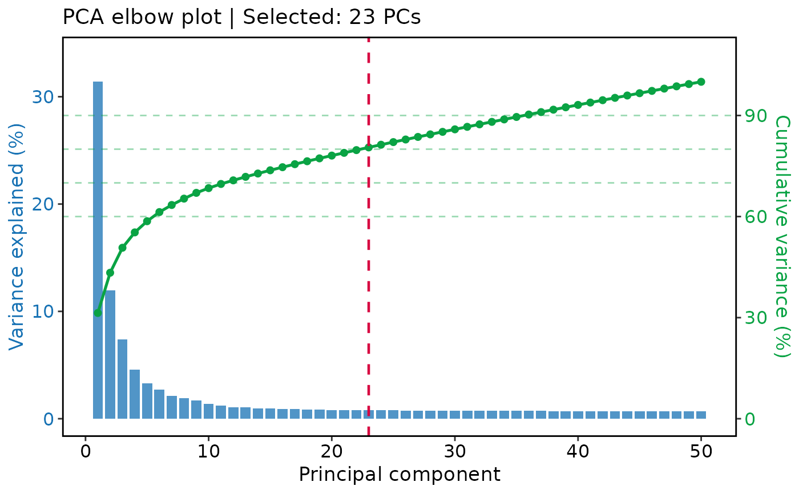

Estimate useful dimensions from a reduction
Usage
RunDimsEstimate(
srt,
reduction = NULL,
reduction_method = NULL,
k = 30L,
method = c("scree", "intrinsic", "ensemble"),
min_dims = 5L,
fallback_max_dims = 50L,
variance_threshold = 0.8,
marginal_gain_threshold = 0.5,
skip_first = FALSE,
use_stored = TRUE,
verbose = TRUE
)Arguments
- srt
A
Seuratobject.- reduction
Name of the dimensional reduction to inspect. Default is
NULL, which automatically selects a PCA-like reduction viaDefaultReduction()withpattern = "pca".- reduction_method
Optional reduction method name. When set to
"nmf"or"glmpca", all available dimensions will be retained.- k
Number of neighbors used by intrinsicDimension::maxLikGlobalDimEst. Default is
30.- method
Dimension-selection method.
"scree"uses PCA standard deviations with broken-stick, elbow, cumulative-variance, and marginal-gain criteria."intrinsic"uses intrinsicDimension::maxLikGlobalDimEst."ensemble"keeps the larger recommendation from both methods when both are available. Default is"scree".- min_dims
Minimum number of dimensions kept when intrinsic-dimension estimation succeeds. Default is
5.- fallback_max_dims
Maximum number of dimensions kept when no valid estimate is available. Default is
50.- variance_threshold
Cumulative variance threshold used by
method = "scree". Default is0.8.- marginal_gain_threshold
Stop point for marginal variance gain (percentage points) used by
method = "scree". Default is0.5.- skip_first
Whether to drop the first dimension from the returned result. Useful for
TFIDF/LSIworkflows. Default isFALSE.- use_stored
Whether to use
misc$dims_estimatealready stored in the reduction when available. Default isTRUE.- verbose
Whether to print the message. Default is
TRUE.
Examples
data(pancreas_sub)
pancreas_sub <- standard_scop(pancreas_sub)
#> ℹ [2026-06-28 08:10:09] Start standard processing workflow...
#> ℹ [2026-06-28 08:10:09] Checking a list of <Seurat>...
#> ! [2026-06-28 08:10:09] Data 1/1 of the `srt_list` is "unknown"
#> ℹ [2026-06-28 08:10:09] Perform `NormalizeData()` with `normalization.method = 'LogNormalize'` on 1/1 of `srt_list`...
#> ℹ [2026-06-28 08:10:10] Perform `FindVariableFeatures()` on 1/1 of `srt_list`...
#> ℹ [2026-06-28 08:10:10] Use the separate HVF from `srt_list`
#> ℹ [2026-06-28 08:10:10] Number of available HVF: 2000
#> ℹ [2026-06-28 08:10:10] Finished check
#> ℹ [2026-06-28 08:10:10] Perform `ScaleData()`
#> ℹ [2026-06-28 08:10:10] Perform pca linear dimension reduction
#> ℹ [2026-06-28 08:10:11] Use stored estimated dimensions 1:23 for Standardpca
#> ℹ [2026-06-28 08:10:11] Perform `Seurat::FindClusters()` with `cluster_algorithm = 'louvain'` and `cluster_resolution = 0.6`
#> ℹ [2026-06-28 08:10:11] Reorder clusters...
#> ℹ [2026-06-28 08:10:11] Skip `log1p()` because `layer = data` is not "counts"
#> ℹ [2026-06-28 08:10:11] Perform umap nonlinear dimension reduction
#> ✔ [2026-06-28 08:10:18] Standard processing workflow completed
RunDimsEstimate(pancreas_sub)
#> ℹ [2026-06-28 08:10:18] Use stored estimated dimensions 1:23 for Standardpca
#> [1] 1 2 3 4 5 6 7 8 9 10 11 12 13 14 15 16 17 18 19 20 21 22 23
DimsEstimatePlot(pancreas_sub)
